10/10 - На рабовите на заедницата
10: Марија Костовска, Ива Галевска, Мице Чаповски, Оливера Аритоноска и Елена Костовска
 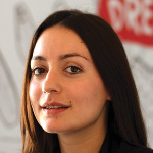
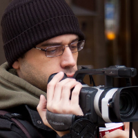
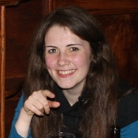
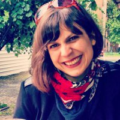
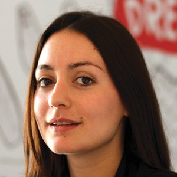
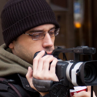
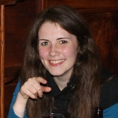
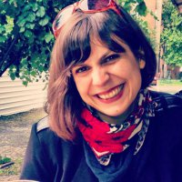
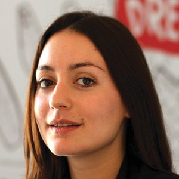
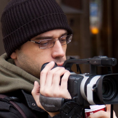
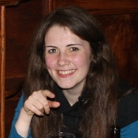
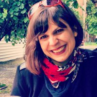
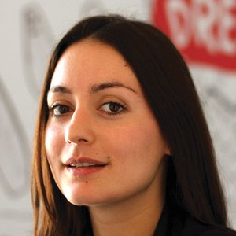
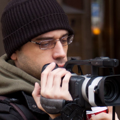
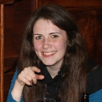
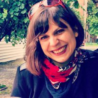
#1 НН: Марија ти беше долго време во позадината во работата на Слободен софтвер Македонија, помагајќи за разни административни работи. Од таа позиција како ја оценуваш работата на организацијата и што мислиш дека бил нејзиниот најважен проект?
МК: Мислам дека најважен проект на Слободен софтвер Македонија е „Сподели знаење“. Не знам точно дали „Сподели знаење“ се смета за проект, но мислам дека овој, да го наречеме проект, овозможи атмосфера за делење на идеи, знаење и помош, а исто така резултираше и со основање на заеднички простор.
Успешноста на организацијата може да се разгледува од неколку страни. Доколку ја разгледуваме успешноста од аспект колку средства успеала организацијата да добие низ годините, не можам да кажам дека Слободен софтвер Македонија е најуспешната организација во Македонија. Но, доколку го рагледуваме успехот по бројот на остварени проекти, споредено со средствата со кои се располагало тогаш дефинитивно е една од поуспешните организации. И морам да споменам дека Слободен софтвер Македонија има нешто што многу малку организации во Македонија го имаат (ако воопшто има некоја таква организација), а тоа е независноста и одржливоста.
#2 НН: Ти учествуваше во една од првите дебати за жените и технологијата во Македонија. Во тој настан не беше директно вклучена Слободен софтвер Македонија. Но, хаклабот денес има редовни женски членки и имаше неколку обиди за женски средби таму. Што мислиш за тоа?
МК: Хм. Тоа е секогаш tricky прашање. Немам проблем со имање женски средби, за било која тема. Но, ми се поставува прашањето, за која цел се женските средби? Дали целта на средбите е да се овозможи дружење на жени кои се заинтересирани за технологија и да споделат нивни мислења и идеи, во кој случај не гледам зошто не би биле мешани групи – сите можат да извлечат корист. Доколку, средбите се организираат, за да се овозможи дружење во хомогена група, која што ќе ти даде поддршка и можност да искомуницираш за одредената тема, а тоа не можеш да го оствариш во мешана група, тогаш дефинитивно треба да има посебни женски средби. Но, не смее да се заборави, дека тие групи треба да почнат како хомогени, но не смеаат да останат такви. Доколку групите останат хомогени, се создала група на поддршка, која што ќе дозволи моментално олеснување за некој од членовите, но реално нема да смени како работите функционираат во организацијата.
#3 НН: Ива, во изминатата година ти два пати соработуваше со Слободен софтвер Македонија. Еднаш на меѓународен конкурс и еднаш за „Бори се женски“. Какво е твоето искуство од овие активности?
ИГ: Првиот пат се работеше за ‘artist in residence’ проект кој го организираше познатиот Eyebeam центар за уметност и технологија од Њујорк каде што аплициравме со DIY кутиите за мерење на загаденоста на воздухот, кои ги изработија членовите на хаклабот. Заеднички ја доразвивме идејата и понудивме проект во кој имавме замисла податоците кои се добиваа од кутиите да: 1. се визуелизираат онлајн (data visualization) 2. се прикаже загаденоста преку т.н. аугментирана реалност (augmented reality) со цел пошироката јавност да добие „пореална“ слика за загаденоста на воздухот кој го дишеме. Вториот пат Ана и Тамара (членки на хаклаб и Бори се женски) направија презентација за Google Summer of Code и Gnome Outreach Women каде ги споделија своите искуства како учеснички во овие програми. И во двата наврати имавме одлична комуникација и соработка која течеше без проблеми. Луѓето од хаклаб се многу кул и отворени. Иако не сум директно вклучена во активностите на хаклабот, сигурна сум дека ќе има уште многу идеи и проекти на кои ќе работиме заедно и кои ќе и’ бидат од корист на заедницата.
#4 НН: Хаклабот КИКА е еден од ретките простори во Скопје кој живее благодарение на донанации на неговите членови и пошироката јавност. Што мислиш за овој модел на функционирање? Може ли да се одржи во опкружување какво што нуди Македонија?
ИГ: Во младо општество како македонското, каде од мали нозе те учат дека „треба да си гледаш за себе“, постои малку свест меѓу луѓето за ефектите на колективното делување, па поради тоа crowdfunding моделот е сеуште нешто ново кај нас. Ми се чини дека овој модел може да биде одржлив доколку подобро се комуницираат активностите на хаклабот и придобивките од постоење на ваков простор со пошироката јавност, па на тој начин да се зголеми членството и оние кои би го поддржувале со донации. Платформа како Kickstarter би била одлична за тоа.
Во малку поширока смисла, прашањето е колку независните простори/организации кои промовираат хактивизам, уметност, контракултура итн. можат да се одржат под будното око на државниот апарат на моќ. Изминативе години сведоци сме на тоа како неколку вакви простори згаснаа поради тоа што просториите им беа одземени (со оглед на тоа што истиве места и ден денес зјаат празни и неискористени, прилично е јасна намерата зад ваквиот потег на државата). Оваа битка, барем досега, се чини дека ја губиме, но во таа смисла хаклабот е добар потсетник за тоа какви простори ни се потребни во градот – каде се преплетуваат слободната мисла, слободната култура и љубовта кон заедниците.
#5 НН: Мице, ти го снимаш и режираш документарниот филм за македонската хакерска заедница. Какво доживување имаш од зад камерите?
МЧ: Да, јас сум тој што се „нафати“ да го документира функционирањето на скопскиот хаклаб, заедно со мојот пријател и член хаклабот, Арангел. Идеја беше да се направи краток документарен филм кој преку толкувањата на неколку членови на организацијата ќе ја долови атмосферата во, и околу хаклабот. Меѓутоа, како што поминаа неколку месеци од снимањето (кое започна во февруари 2011 година), видовме дека сето тоа може да се прошири на некој начин, и да се направи поконкретен документарец за хаклабот КИКА.
Доживувањето од зад камерите е одлично. Снимањето на соговорниците (голем дел од нив основачи на хаклабот и организацијата Слободен софтвер Македонија) како раскажуваат за постоењето на едно место во Скопје, каде што секој кој што сака да сподели знаење, искуства, техники, не само од информатиката, туку и од многу други области од општеството, е едно интересно искуство. Слушајќи како секој од нив објаснува и презентира поединечен сегмент од живеењето на КИКА, навистина добивав инспирација за концептот на филмот. Сите луѓе кои учествуваа „го донесоа“ токму тоа што требаше, бидејќи мислам дека беа покриени повеќе делови од информативен, содржаен, па и забавен карактер. Секако, покрај уживањето во слушањето на соговорниците, постоеше и делот со задачите - јас како камерман (улога која исто така ми припаѓа мене покрај режијата) и Арангел како водач на интервјуата (кој е исто така и сценарист на филмот). Работата на камерман не е ни малку едноставна, па можеби во делови од снимањето фокусот од следењето на разговорот лесно се пренесува на некој технички дел околу снимањето. Сепак, тоа не беше толкава пречка за комплетно да се чуе и разбере соговорникот. Мислам дека доста добро помина сè, бидејќи сите присутни на снимањата беа на висина на задачата (ако може така да се изразам), а во исто време и одлично се забавуваа.
#6 НН: Меѓу другото, документирањето те одведе на road trip до CCC во Хамбург. Стекна ли таму поинакво искуство [од тоа во Скопје] за хакерите? Како ја цениш нивната работа?
МЧ: Road trip-от на CCC во Хамбург беше посебно доживување и искуство. Како што кажав претходно, промената во концептот на филмот и експанзијата со снимените материјали доведе до една одлична идеја да се документира и патувањето на скопските хакери во Хамбург, каде што тие учествуваа на годишниот конгрес за хакери од целиот свет. Филмското документирање на членовите на КИКА на еден толкав евент, беше огромно искуство за мене, пред сè како филмски аматер. Мислам дека тоа беше едно ново, и прилично интересно искуство, како за мене, така и за моите сопатници и учесници во документарниот филм, бидејќи и тие за првпат учествуваа во еден ваков тип на снимање на филм (т.е. за првпат беа снимани додека си ги вршеа секојдневните активности на конгресот).
Во Хамбург морам да признам дека научив доста работи поврзани не само со хакерството и сите позитивни работи кои всушност произлегуваат од него, туку и за worldwide функционирање на хаклабовите, т.е. организации како што е КИКА. Остваривме контакти со голем број учесници на конгресот, а некои од нив земаа учество и во самиот филм, како на пр. членови на хаклабови од Холандија, Романија и САД. Што се однесува до самата работа на луѓето инволвирани во конгресот, мислам дека целата атмосфера беше позитивна - навистина беше одлично да се види на едно место толку многу луѓе, да имаат толку многу идеи како да го направат секојдневното живеење подобро, а светот едно поинтересно место за живеење. Повторно ќе потенцирам дека сето тоа што се случуваше во Хамбург тие неколку дена беше ново искуство за мене, пришто научив многу нови работи, кои имаат голем придонес во изработката на на нашиот документарен филм.
#7 НН: Оливера, твојата соработка со Слободен софтвер Македонија се случи кога заедно го организиравме фестивалот на слободни филмови во Кинотека на Македонија? Какви впечатоци носиш ти од тој настан?
ОА: Тоа е можеби најискулираната екипа на луѓе со кои досега сум работела. Во хаклаб Кика ме пречека опуштена и пријателска атмосфера, многу насмеани лица и секако лед-коцката (многу важен дел од фестивалот кој одлично се вклопи во полу-осветлениот хол на Кинотека на Македонија). Се запознав подобро со приказната за слободниот софтвер преку филмовите и работата на Слободен софтвер преку муабет со дечките и девојките во Кика. Единствено од толку многу „тролање“ по многу малку време не можев повеќе да ја направам разликата :) Мислам дека публиката уживаше во изборот на филмовите и навистина ми е мило што бев дел од случувањето посветено на 10-те години од основањето на Слободен софтвер Македонија.
#8 НН: Што мислиш за филмовите што се издадени под некоја Creative Commons лиценца? Влијае ли тој послободен модел на дистрибуција на филмската вредност на делото?
ОА: Мислам дека особено во денешно време филмските дела треба дефинитивно послободно да се дистрибуираат. Creative Commons ја слави токму слободната култура и ја поддржува широката достапност на филмовите (и креативните дела воопшто). Сметам дека тоа значително влијае на филмската вредност на делото. Во овој контекст ќе ги спомнам документарните филмови. Навистина е тешко да се стигне до нив на Интернет, може да се гледаат само на селектирани филмски фестивали, а многу од нив раскажуваат одлични приказни и се автентични лекции кои се неопходни за еден иден филмски автор. Прашањето на авторските права во дигитален контекст за мене е апсурд и тука ќе се послужам со едно од петте златни правила за филмаџиите на Џим Џармуш, каде спомнува и изјава од еден од моите омилени режисери, Жан Лик Годар.
#9 НН: Елена, ти професионално се занимаваш со прашања поврзани со авторските права. Што мислиш за моделот на авторски права што се применува во слободниот софтвер и проектите како Wikipedia?
ЕК: На прва би рекла дека копилефт концептот е свеж воздух кој струи низ проблематика на авторските права. Копилефт концептот кој се реализира преку збир на лиценци како што е на пример ГНУ Општата Јавна Лиценца, која наоѓа примена во слободниот софтвер и во проектот Википедија, не потсетува дека кога зборуваме за авторски права не треба да заборавиме дека всушност зборуваме за креативност. Во недостаток на креативност ќе нема креација, ако нема креација ќе нема авторски права. Е сега, како да зборуваме за креативност, а да не зборуваме за слобода? Слободниот софтвер зборува за слобода, слобода да се користи, слобода да се менува, но притоа да не се напуштат авторските права туку да се даде гаранција на истите. Во последниве години сме сведоци на заострување на законската регулатива во однос на времетраењето на авторските права, нивното важење практично се турка до максимум, не земајќи ги предвид реалните потреби на општеството. Во една таква ситуација, повеќе од неопходно е актуелизирање на копилефт концептот и негово воведување во наставниот материјал на студиите по интелектуална сопственост на кои што и јас самата сум студент. Копилефт е реалност, а реалноста се дисктутира.
#10 НН: Ти ја запозна регионалната хакерска заедница преку анти-конференцијата НСНД во Струга. Како би го опишала НСНД? Колку е лесно или тешко за некој што прв пат доаѓа да се вклопи во таква амосфера? Што мислиш за работата на сите тие луѓе?
ЕК: Во Струга дишев слобода. Се изнадишав слобода. НСНД за мене е приказна за другарство. И неизмерна желба за споделување-знаење, вештина, не е важно што. На НСНД научив што е real life hacker и прв пат чув дека распбери пај може да е и нешто друго освен пита со малина. НСНД е потврда дека се додека знаеш каде ти е срцето, не е важно дали си правник, електраш или економист.
НСНД заедницата е добра намера која прави добри нешта.